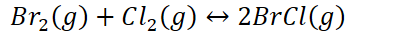
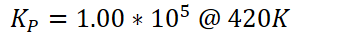
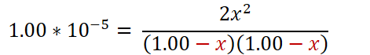
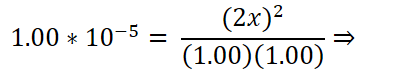
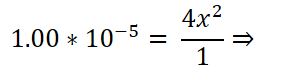
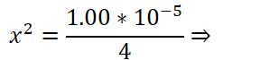
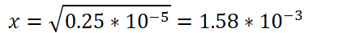

How to use K and initial (before equilibrium) conditions to calculate equilibrium concentrations/pressures
2 sets of conditions: initial conditions (before equilibrium) and equilibrium conditions (after equilibrium is established)
Use the relative values of Q and K to show how to make the reaction reach equilibrium
{width="6.875in" height="0.3541666666666667in"}
Amount of products must decrease
Reverse reaction is favored
{width="6.802083333333333in" height="0.3541666666666667in"}
Amount of products must increase
Forward reaction is favored
Reaction does not go to completion: can't just use stoichiometry to calculate equilibrium concentrations
Use ICE: initial, change, equilibrium to keep track of different values and calculate equilibrium conditions
ICE table:
{width="4.15625in" height="0.3333333333333333in"}
{width="3.5833333333333335in" height="0.34375in"}
{width="6.21875in" height="0.375in"}
- {width="1.8645833333333333in" height="0.3541666666666667in"}
<!-- -->
2 methods to solve for x:
{width="2.5104166666666665in" height="0.3541666666666667in"}
Neglect X in the denominator
{width="4.90625in" height="0.7291666666666666in"}
For very small values of K, X will be so small that subtracting X in the denominator yields essentially no change
<!-- -->
{width="4.25in" height="0.7291666666666666in"}
{width="3.1979166666666665in" height="0.6979166666666666in"}
{width="3.0in" height="0.6979166666666666in"}
{width="4.458333333333333in" height="0.4270833333333333in"}
<!-- -->
Plug into ICE table
- Square both sides and solve:
- {width="7.760416666666667in" height="0.8333333333333334in"}
- {width="4.572916666666667in" height="1.0in"}
- {width="3.3333333333333335in" height="0.65625in"}
- {width="4.104166666666667in" height="0.3333333333333333in"}
- {width="4.104166666666667in" height="0.3333333333333333in"}
- {width="3.4583333333333335in" height="0.3333333333333333in"}
- {width="2.4791666666666665in" height="0.65625in"}
- {width="2.53125in" height="0.34375in"}
```{=html}
<!-- -->
```
- Plug into ICE table
{width="0.6666666666666666in" height="0.3333333333333333in"}